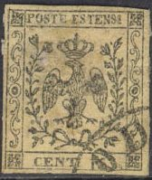
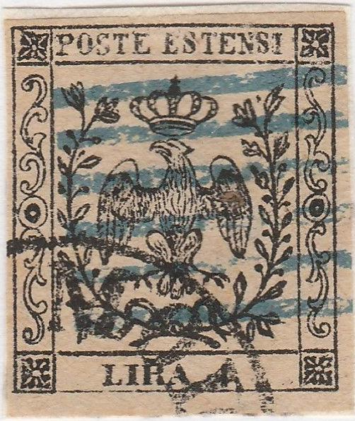
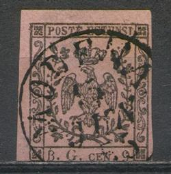
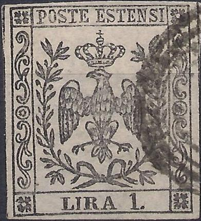
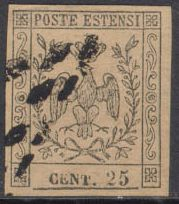
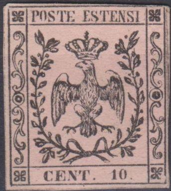
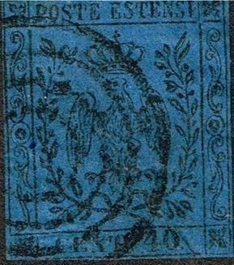
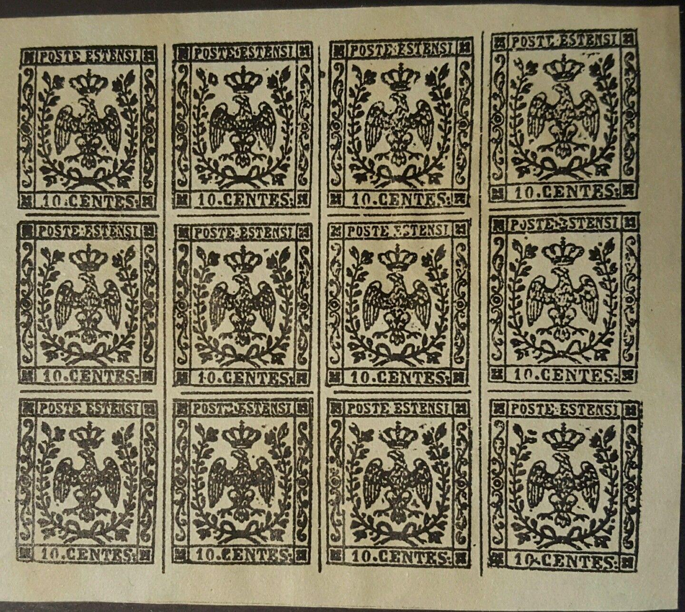

Presumably genuine stamps
Return To Catalogue - Modena 1852 issue, forgeries part 2 - Modena 1852 issue - Italy
Note: on my website many of the
pictures can not be seen! They are of course present in the
catalogue;
contact me if you want to purchase the catalogue.
Currency: 100 Centesimi = 1 Lira.
Presumably genuine stamps
The 9 c stamp exist with 'B.G. CEN 9' in large size (first printing) and smaller sizes (see images above).

A 9 c black on violet exists without the 'B.G.', it is a stamp that was prepared but never been issued (due to a change in rate from 9 c to 10 c). It was sold to stamp collectors afterwards.
The 1 Lira is the only stamp with a watermark (large letter 'A'), all the other stamps have no watermark. This watermark can be found inverted or upside down.

(Left variety without dot and right with dot)
(Genuine stamps, hole in right upper corner and lower corners)
Forgery detection: the line at the bottom of the stamp does
not touch the ornaments on either side in the genuine stamps and
furthermore the line under "POSTE ESTENSI" does not
touch the frame on the right hand side. The Fournier forgeries
can be detected in this way (the lines are continuous), except
for the 9 c newspaper stamp (which is forged in a better way).
According to 'The forged stamps of all countries' by J.Dorn, the
open corner in the right-hand upper inner frame, the dot over the
right hand side leaves and the open pearl at the outermost left
branch of the crown should be reliable characteristics of the
genuine stamps.
Another way to quickly distinguish the genuine and the many
forgeries is to check the leave pattern which is usually
different for each forgery type.





Same forgeries with more 'convincing' cancel added.
In the above Fournier forgeries the line at the bottom of the stamp is continuous. Furthermore the leaves at the left lower and upper corner are different from the genuine stamps. The cancel on the 1 L is on exactly the same location as in the image of the Fournier album of philatelic forgeries (it might have been printed with the stamp at the same time). Fournier offers these forgeries (all 6 values) for 1.50 Swiss Francs in his 1914 pricelist (as second choice forgeries). I have mostly seen it cancelled with horizontal bars or a circular cancel with "MODENA" (no date). However, other more convincing cancels exist (see image above). I've also seen whole sheets of 25 stamps (5x5) with precancelled "MODENA", a large "PD" or 5 bars cancel (usually several different cancels in one sheet); very similar to the Spiro products (Fournier might have bought these Spiro forgeries and resold them as was quite common among forgers). This forgery is listed as forgery XXII in Billig's handbook.
Whole sheets of these forgeries.
Fournier also offers a first choice forgery of the 9 c journal stamp (B.G. cen. 9) for 1 Swiss Franc in his 1914 pricelist. This forgery is much more deceptive than the above forgeries. I've seen the cancel "MODENA 15 JUN 55" in a large circle in 'The Fournier album of philatelic forgeries' and on the stamp shown below. The line at the bottom of the stamp does not touch the ornaments on either side in these forgeries and furthermore the line under "POSTE ESTENSI" does not touch the frame on the right hand side as in the genuine stamps. Also the "B" has no left serifs and the "G" of "B.G." is different.

Forged Fournier cancel 'MODENA 15 JUN 55' in a single circle,
reduce size, taken from a Fournier Album
Page from a Fournier Album.
 


Note the different "CENT 10" inscription in the 10 c
values. This is forgery type XV of Billig. The back of the head
of the eagle is strange. A horizontal line appears in the apple
on top of the crown.
(Forgeries, reduced sizes, left with outside lines cut off)
In the above forgery (the third one described in Album Weeds) there is an extra outline all around the stamp, there are separating lines between the stamps in the genuine stamps, but not like the above forgery (see image below for comparison with genuine stamps). There are no open corners and no dot on the right hand side leaves. A further test for this forgery is that there are three rows of feathers very clearly visible on the chest of the eagle; arranged in two, three and three.
(Genuine stamps with separating lines for comparison)
(in this forgery the line below the value is also closed)





Crown and corner ornaments badly drawn, bottom frame line closed.
This type of forgery is often cancelled with a pattern of dots.
The beak of the eagle is too small and open. This appears to be
type XVI of Billig's handbook.


Forgeries made by the same forger


Primitive forgeries with totally different side patterns and
leaves. I've also seen the 15 c of this particular forgery type.
This appears to be forgery type XXI of the Billig book.
 


Forgery with large "40" and slightly different side
ornaments. Next to it a forgeries of the 1 L and 15 c with bogus
'concentric circles' cancels, made by the same forger. This
particular forgery either appears to have a 4 concentric circles
cancel or a "PD" cancel. Note, that in the 15 c and 10
c the value was apparently 'pasted in', resulting in some breaks
in the bottom frameline in the 10 c and above the "15"
in the 15 c value. This is forgery type II of the Billig
handbook.

A forgery of the 10 c on thick paper.

Forgery of the 9 c value; the crown touches the head of the
eagle. The leaf pattern is also different from a genuine stamp
(compare the upper left leaves with a genuine specimen).


Forgery of the 10 c value, the left hand side ornaments go down
all the way to the bottom.

Modena 'BG CEN 9' black on red ('FALSCH' written in white on the
background at the bottom of the stamp); This forgery was given
away as an art supplement in one of Senf's
stamps journals. Note the detached leaves in the upper left part
of the stamp. I've seen this forgery with a black bars cancel
covering largely the word 'FALSCH'. Apperently, Senf copied the
design from an earlier Moens illustration
from Les Timbres Poste Illustre of 1864 (plate 14).
Very faint forgery of the 10 c value.

A sheetlet of 16 stamps with "10 CENTES" inscription,
proofs or forgeries?
Modena 1852 issue, forgeries part 2
{kind=link}
{kind=link}
{kind=link}
{kind=link}
{kind=link}